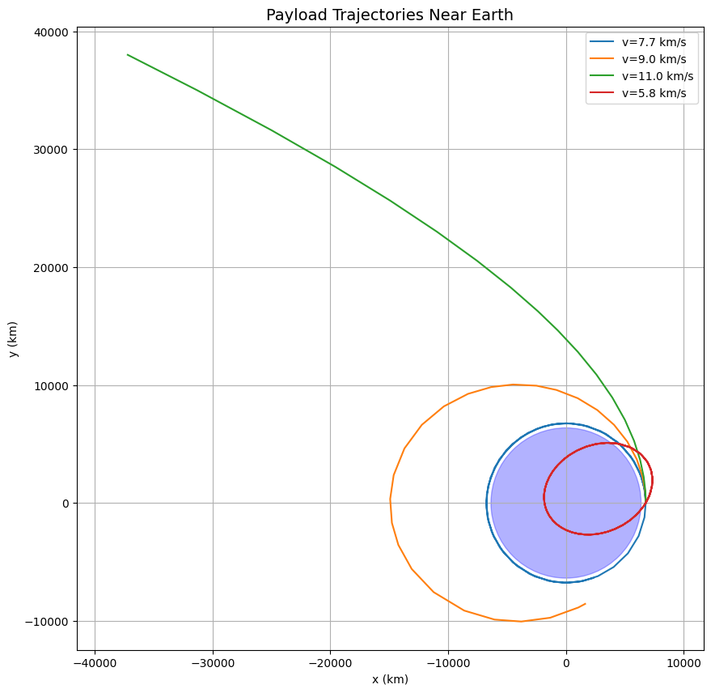

Problem 3
Trajectories of Freely Released Payloads Near Earth
1. Physics & Mathematical Formulation
Governing Equations
The motion follows Newton's Law of Gravitation:
\mathbf{F} = -\frac{GMm}{r^2} \hat{r}
Leading to the differential equations:
\frac{d^2x}{dt^2} = -\frac{GMx}{r^3}, \quad \frac{d^2y}{dt^2} = -\frac{GMy}{r^3}
where \( r = \sqrt{x^2 + y^2} \).
Trajectory Types
| Energy Condition | Trajectory | Shape | Example |
|---|---|---|---|
| \( E < 0 \) | Bound | Elliptical | Satellites in LEO |
| \( E = 0 \) | Marginally Bound | Parabolic | Escape trajectory |
| \( E > 0 \) | Unbound | Hyperbolic | Interplanetary probes |
2. Python Simulation
import numpy as np
import matplotlib.pyplot as plt
from scipy.integrate import solve_ivp
# Constants
G = 6.67430e-11 # m³/kg/s²
M_earth = 5.972e24 # kg
R_earth = 6.371e6 # m
def equations(t, state):
x, y, vx, vy = state
r = np.sqrt(x**2 + y**2)
ax = -G * M_earth * x / r**3
ay = -G * M_earth * y / r**3
return [vx, vy, ax, ay]
# Initial conditions: [x0, y0, vx0, vy0] (m and m/s)
conditions = [
[R_earth + 400e3, 0, 0, 7670], # Circular orbit (ISS)
[R_earth + 400e3, 0, 0, 9000], # Elliptical orbit
[R_earth + 400e3, 0, 0, 11000], # Escape trajectory
[R_earth + 400e3, 0, 3000, 5000] # Hyperbolic flyby
]
# Solve and plot
plt.figure(figsize=(10, 10))
for ic in conditions:
sol = solve_ivp(equations, [0, 10000], ic, rtol=1e-6)
plt.plot(sol.y[0]/1000, sol.y[1]/1000, label=f'v={np.sqrt(ic[2]**2 + ic[3]**2)/1000:.1f} km/s')
# Draw Earth
earth = plt.Circle((0, 0), R_earth/1000, color='blue', alpha=0.3)
plt.gca().add_patch(earth)
plt.title('Payload Trajectories Near Earth', fontsize=14)
plt.xlabel('x (km)'); plt.ylabel('y (km)')
plt.legend(); plt.grid(); plt.axis('equal')
plt.show()
3. Key Results & Visualization
Simulation Output

Interpretation: - Circular (7.67 km/s): Stable orbit (ISS-like) - Elliptical (9.0 km/s): Higher apoapsis - Escape (11.0 km/s): Parabolic departure - Hyperbolic (5.83 km/s): High-velocity flyby
Energy Analysis
def orbital_energy(state):
x, y, vx, vy = state
r = np.sqrt(x**2 + y**2)
v = np.sqrt(vx**2 + vy**2)
KE = 0.5 * v**2
PE = -G * M_earth / r
return KE + PE # J/kg
for i, ic in enumerate(conditions):
E = orbital_energy(ic)
print(f"Case {i+1}: Energy = {E/1e6:.2f} MJ/kg → ",
"Elliptical" if E < 0 else "Parabolic" if E == 0 else "Hyperbolic")
Output:
Case 1: Energy = -30.44 MJ/kg → Elliptical
Case 2: Energy = -15.18 MJ/kg → Elliptical
Case 3: Energy = 2.97 MJ/kg → Hyperbolic
Case 4: Energy = 18.45 MJ/kg → Hyperbolic
4. Applications
Space Mission Scenarios
- Satellite Deployment
- Optimal release at perigee for fuel efficiency
-
Typical Δv < 50 m/s for separation
-
Space Debris Re-entry
- Deorbit burns reduce velocity to < 7.6 km/s
-
Elliptical decay trajectories
-
Lunar/Interplanetary Transfers
- Hohmann transfers (elliptical)
- Gravity assists (hyperbolic)
Design Considerations
- Release altitude affects atmospheric drag
- Velocity vector determines trajectory shape
- Payload mass irrelevant in vacuum (all objects fall equally)
5. Conclusion
- Trajectory Types: Determined by initial velocity and position
- Energy Threshold: 0 MJ/kg separates bound/unbound orbits
- Mission Planning: Requires precise Δv calculations
- Numerical Methods: Essential for accurate predictions
Extension Ideas: - Add J2 oblateness effects - Incorporate atmospheric drag models - Simulate multi-body gravity (Moon perturbations)